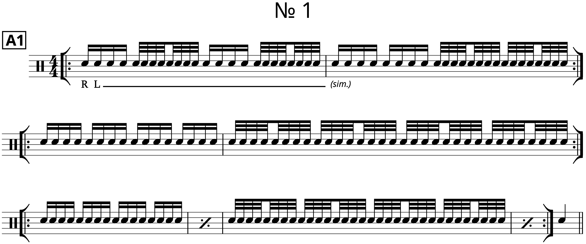
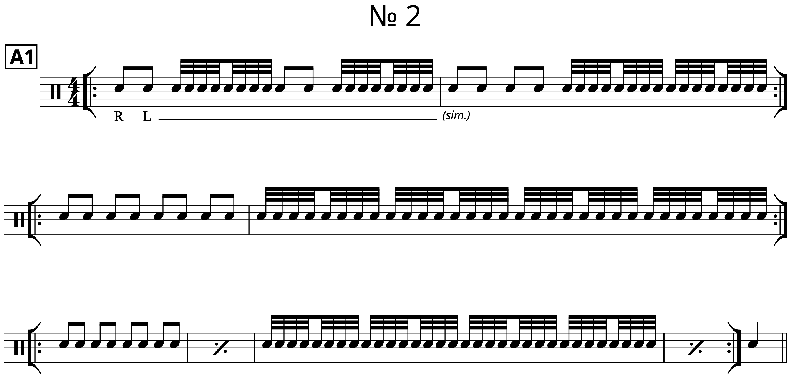
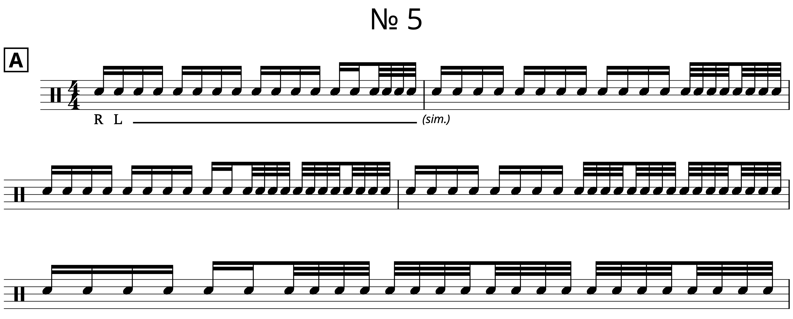
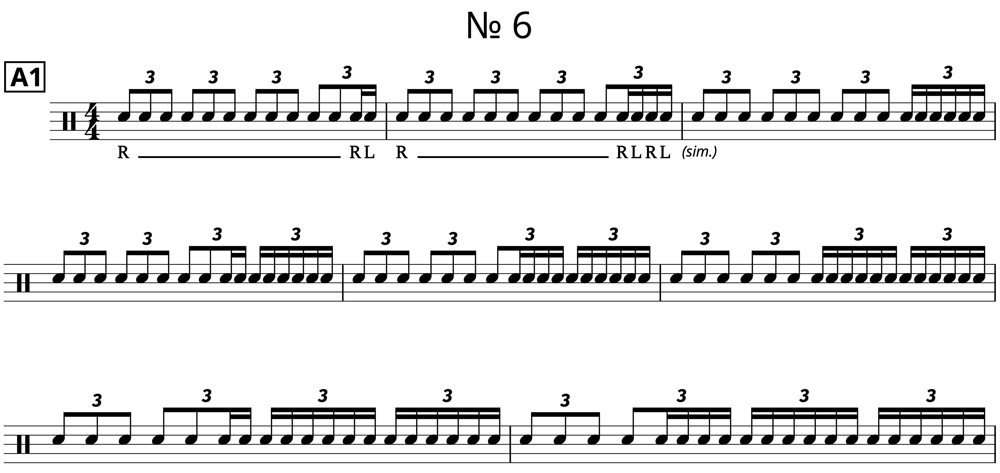
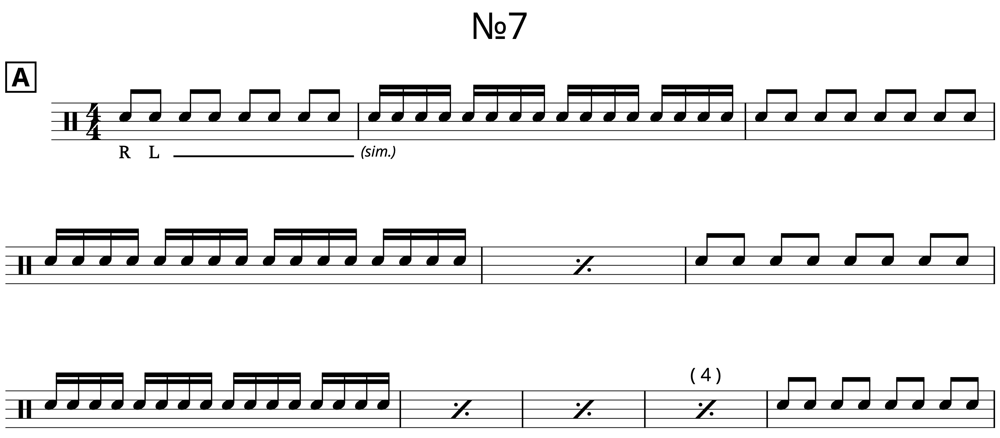

Exercise(s): Building Speed on the Drums
Posted on December 12, 2021

Here’s a packet containing a handful of exercises that I’ve used over the years to build speed and stamina for some pretty simple sticking patterns, mainly singles, doubles, and basic rudiments (like the single paradiddle and the paradiddle–diddle). The kind of things you want to be able to play fast depends on what kind of a player you are, but in reality, it’s only the simple patterns that are worth practicing. There’s not really a need for the typical drummer to get good at playing inverted flam taps really fast.
Moreover, these exercises are all built with duple and triple patterns (e.g. 16th notes/32nd notes and 8th note triplets/16th note triplets). Again, those are the only kind of subdivisions that the typical drummer needs to be familiar with. If you are a more adventurous player, you could use the framework of some of these drills to repurpose them for other subdivisions like quintuplets.
Some of these exercises are pretty ubiquitous, but all of them seem to go under different names. It’s hard to research this kind of stuff, so I just numbered them one through seven.
№ 1 is a tried and true way of developing a fast single stroke roll — it’s basically just alternating between 16th note singles and 32nd note singles. It’s important to play the 16th notes as singles, but you could play the 32nd notes as any pattern: single paradiddle, including permutations (RLRR LRLL • RRLR LLRL • RLLR LRRL • RLRL LRLR), or perhaps a combination of singles and doubles (RLRL RRLL • RLRR LLRL). Don’t get too carried away; the ultimate goal of these exercises is to build speed, not stick control.
As demonstrated by number № 1 A2, you can also swap with the 32nd notes for 16th note triplets and play with whatever sticking you please: singles, paradiddle–diddles, triples, etc.
In order to play this entire exercise with only paradiddles, you need to rework it a bit and start by alternating at the half note instead of the quarter note; the hand to hand sticking of a paradiddle convolutes the exercise a bit otherwise (again, it would be better for stick control). The same applies if you want to play triplet singles throughout. Find № 1 B1 and B2 in the PDF to see what I mean.
I’d recommend using the same logic if you want to experiment with other subdivisions, such as alternating between 16th note and 32nd note quintuplets.
№ 2 is a similar idea, but using 8th note singles as a check pattern instead of 16th notes. This really helps in isolating the movements of 32nd note and 16th note singles, but it really only works well when trying to work on a pattern that can be evenly divided into eighth notes.

№ 3 is a very famous exercise for working on the double stroke roll. It’s invariably known as Higga-Digga-Burr, Digga-Digga-Burr, and Chicken with a Roll. More or less the same idea as before. I typically find it easier to navigate had to hand doubles rather than singles, so you could use any subdivision with this one.
№ 4 is a drill I cooked up while messing around on the practice pad one night, although I think I may have seen variations around the internet, and perhaps in some older drum books that I bootlegged PDFs of. Essentially, you play 16th notes singles for longer and longer runs, ending with two 8th notes. You can take each repeat for as long as you want to. The drill also works for 16th note triplets.
№ 5 has gotten popular in the last couple of years or so. This one is all about playing a check pattern of singles and slowly adding in fast singles starting at the end of the measure. This works as 16th notes or 8th note triplets.
№ 6 is perhaps the most brutal. You play a string of notes, on one hand, adding fast singles with both hands, again building out from the end of the measure. This is a very demanding exercise, and you could use any subdivision you want to for this one: quintuplets, septuplets, nonuplets, you name it.
№ 7 is included as a bonus — I’ve always called this one a pyramid exercise, but who knows what that really means in this day and age amongst drummers. № 7 starts with a slow check pattern as you gradually play measures of fast notes, adding more and more measures together in multiples of two, using the check pattern to help catch your breath. You could keep going for as long as you please, or add measures more linearly instead of going by multiples of two.
Hopefully, this gives you good material to work with. Any one of these exercises can be effective in building speed, but having a few of them in your pocket can give you some variety to make things less tedious. Working on speed is never exciting; you just have to get your metronome out and keep working over and over and over again as you inch your way up. It’s dull, but we all have to do it!
Tags: 2021 • Warmups/Exercises